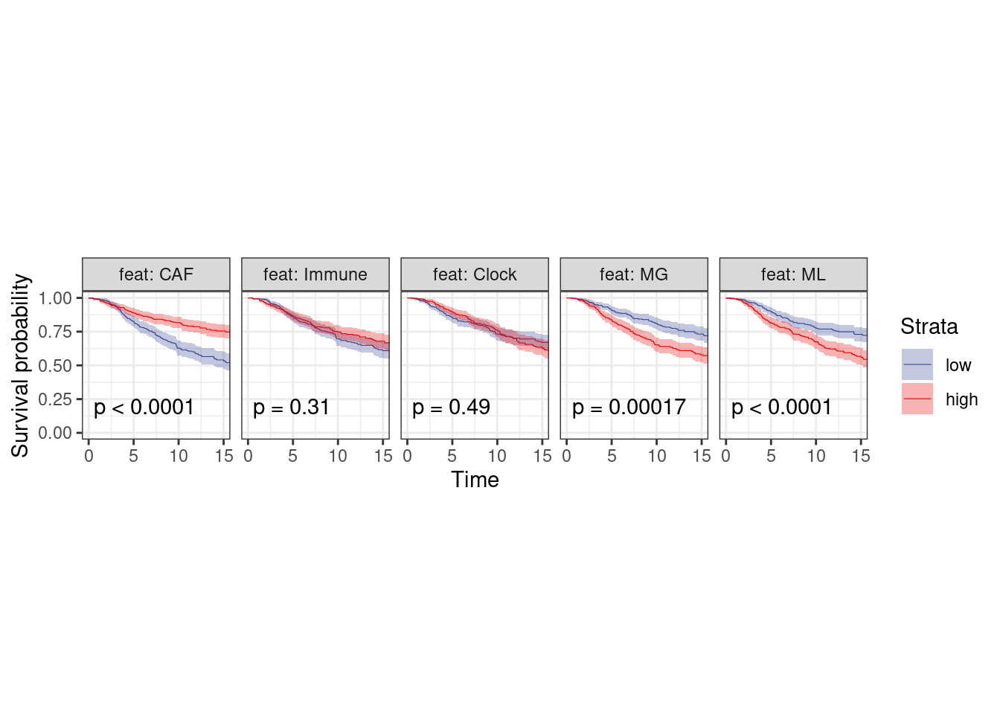
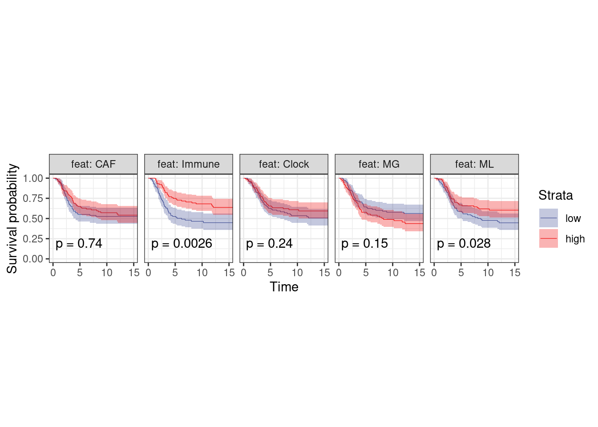
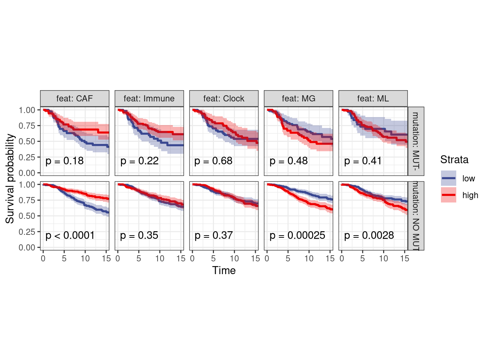
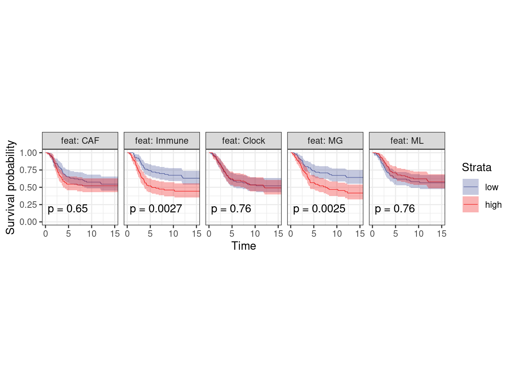

9 Survival
source(here::here("scripts/init.R"))feats_tidy <- get_all_features() %>%
select(-immune, -caf) %>%
rename(Immune = immune.meth, CAF = caf.meth, Clock = clock) %>%
gather("feat", "score", -ER, -samp) %>%
mutate(feat = factor(feat, levels = c("CAF", "Immune", "Clock", "MG", "ML")))surv_df <- survival %>%
select(-ER) %>%
left_join(feats_tidy, by = "samp") %>%
filter(ER != "normal") %>%
group_by(ER, feat) %>%
filter(sum(!is.na(score)) >= 1) %>%
mutate(score = cut(score, breaks = quantile(score, 0:3 / 3, na.rm = TRUE), labels = c("low", "mid", "high"), include.lowest = TRUE)) %>%
ungroup() %>%
filter(score != "mid") %>%
mutate(score = factor(score, levels = c("low", "high")))
surv_df %>% count(feat, ER, score)## # A tibble: 20 x 4
## feat ER score n
## 1 CAF ER- low 104
## 2 CAF ER- high 103
## 3 CAF ER+ low 370
## 4 CAF ER+ high 369
## 5 Immune ER- low 104
## 6 Immune ER- high 103
## # ... with 14 more rowssurv_df %>% count(feat, ER)## # A tibble: 10 x 3
## feat ER n
## 1 CAF ER- 207
## 2 CAF ER+ 739
## 3 Immune ER- 207
## 4 Immune ER+ 739
## 5 Clock ER- 207
## 6 Clock ER+ 739
## # ... with 4 more rows9.0.0.1 Figure 4D
options(repr.plot.width = 12, repr.plot.height = 3)
p_surv_pos <- surv_df %>%
filter(ER == "ER+") %>%
plot_km("score", facet.by = "feat", ggtheme = theme_arial(6), time_breaks = 5, legend = "none", censor.size = 3, colors = "aaas", time_range = c(0, 15), nrow = 1, censor = FALSE, pval = TRUE, size=0.2) + theme(aspect.ratio = 1)## Warning in (function (survsummary, times, survtable = c("cumevents",
## "risk.table", : The length of legend.labs should be 10## Warning: `as.tibble()` was deprecated in tibble 2.0.0.
## Please use `as_tibble()` instead.
## The signature and semantics have changed, see `?as_tibble`.## Warning: `select_()` was deprecated in dplyr 0.7.0.
## Please use `select()` instead.p_surv_neg <- surv_df %>%
filter(ER == "ER-") %>%
plot_km("score", facet.by = "feat", ggtheme = theme_arial(6), time_breaks = 5, legend = "none", colors = "aaas", time_range = c(0, 15), nrow = 1, censor = FALSE, pval = TRUE, size=0.2) + theme(aspect.ratio = 1)## Warning in (function (survsummary, times, survtable = c("cumevents",
## "risk.table", : The length of legend.labs should be 10p_surv_pos + theme_bw() + theme(aspect.ratio=1)
p_surv_neg + theme_bw() + theme(aspect.ratio=1)
surv_df %>% group_by(feat, ER, score) %>% summarise(n_death = sum(y < 5 & death == 1), n_surv = sum(y >= 5), n = n_surv + n_death, surv = n_surv / n, surv_p = scales::percent(surv)) %>% as.data.frame## feat ER score n_death n_surv n surv surv_p
## 1 CAF ER- low 45 51 96 0.5312500 53%
## 2 CAF ER- high 35 63 98 0.6428571 64%
## 3 CAF ER+ low 61 277 338 0.8195266 82%
## 4 CAF ER+ high 39 302 341 0.8856305 89%
## 5 Immune ER- low 47 47 94 0.5000000 50%
## 6 Immune ER- high 25 71 96 0.7395833 74%
## 7 Immune ER+ low 49 289 338 0.8550296 86%
## 8 Immune ER+ high 47 293 340 0.8617647 86%
## 9 Clock ER- low 38 60 98 0.6122449 61%
## 10 Clock ER- high 34 61 95 0.6421053 64%
## 11 Clock ER+ low 51 290 341 0.8504399 85%
## 12 Clock ER+ high 35 298 333 0.8948949 89%
## 13 MG ER- low 36 64 100 0.6400000 64%
## 14 MG ER- high 41 51 92 0.5543478 55%
## 15 MG ER+ low 31 308 339 0.9085546 91%
## 16 MG ER+ high 57 281 338 0.8313609 83%
## 17 ML ER- low 41 56 97 0.5773196 58%
## 18 ML ER- high 32 61 93 0.6559140 66%
## 19 ML ER+ low 35 309 344 0.8982558 90%
## 20 ML ER+ high 64 267 331 0.8066465 81%df <- surv_df %>% filter(ER == "ER+", feat == "MG")
survival::survdiff(survival::Surv(df$y, df$death) ~ score, data = as.data.frame(df))## Call:
## survival::survdiff(formula = survival::Surv(df$y, df$death) ~
## score, data = as.data.frame(df))
##
## N Observed Expected (O-E)^2/E (O-E)^2/V
## score=low 370 95 123 6.55 14.1
## score=high 369 136 108 7.51 14.1
##
## Chisq= 14.1 on 1 degrees of freedom, p= 0.0002df <- surv_df %>% filter(ER == "ER-", feat == "MG")
survival::survdiff(survival::Surv(df$y, df$death) ~ score, data = as.data.frame(df))## Call:
## survival::survdiff(formula = survival::Surv(df$y, df$death) ~
## score, data = as.data.frame(df))
##
## N Observed Expected (O-E)^2/E (O-E)^2/V
## score=low 104 44 51.1 0.977 2.12
## score=high 103 51 43.9 1.136 2.12
##
## Chisq= 2.1 on 1 degrees of freedom, p= 0.1df <- surv_df %>% filter(ER == "ER+", feat == "MG")
survival::coxph(survival::Surv(df$y, df$death) ~ score, data = as.data.frame(df))## Call:
## survival::coxph(formula = survival::Surv(df$y, df$death) ~ score,
## data = as.data.frame(df))
##
## coef exp(coef) se(coef) z p
## scorehigh 0.4998 1.6484 0.1343 3.722 0.000198
##
## Likelihood ratio test=14.14 on 1 df, p=0.0001699
## n= 739, number of events= 231df <- surv_df %>% filter(ER == "ER-", feat == "MG")
survival::coxph(survival::Surv(df$y, df$death) ~ score, data = as.data.frame(df))## Call:
## survival::coxph(formula = survival::Surv(df$y, df$death) ~ score,
## data = as.data.frame(df))
##
## coef exp(coef) se(coef) z p
## scorehigh 0.2988 1.3483 0.2060 1.451 0.147
##
## Likelihood ratio test=2.11 on 1 df, p=0.1461
## n= 207, number of events= 959.0.0.2 Extended Data Figure 10D
df <- survival %>%
select(-ER) %>%
left_join(feats_tidy, by = "samp") %>%
filter(ER != "normal") %>%
left_join(get_mut_df() %>%
filter(gene == "TP53") %>%
filter(!is.na(mutation)) %>%
select(samp, gene, mutation)) %>%
filter(ER == "ER+", !is.na(mutation)) ## Joining, by = "samp"p_surv_p53 <- df %>%
group_by(ER, feat) %>%
filter(sum(!is.na(score)) >= 1) %>%
mutate(score = cut(score, breaks = quantile(score, 0:3 / 3, na.rm = TRUE), labels = c("low", "mid", "high"), include.lowest = TRUE)) %>%
ungroup() %>%
filter(score != "mid") %>%
mutate(score = factor(score, levels = c("low", "high"))) %>%
plot_km("score", facet.by = c("mutation", "feat"), ggtheme = theme_arial(6), time_breaks = 5, legend = "none", censor.size = 3, colors = "aaas", time_range = c(0, 15), nrow = 1, censor = FALSE, pval = TRUE) + theme(aspect.ratio = 1)## Warning in (function (survsummary, times, survtable = c("cumevents",
## "risk.table", : The length of legend.labs should be 20p_surv_p53 + theme_bw() + theme(aspect.ratio=1)
df %>% distinct(samp, ER, mutation) %>% count(mutation)## # A tibble: 2 x 2
## mutation n
## 1 MUT- 202
## 2 NO MUT 8249.0.1 Raw-methylation
feats_tidy <- get_all_features_raw() %>%
select(-immune, -caf) %>%
rename(Immune = immune.meth, CAF = caf.meth, Clock = clock) %>%
gather("feat", "score", -ER, -samp) %>%
mutate(feat = factor(feat, levels = c("CAF", "Immune", "Clock", "MG", "ML")))surv_df <- survival %>%
select(-ER) %>%
left_join(feats_tidy, by = "samp") %>%
filter(ER != "normal") %>%
group_by(ER, feat) %>%
filter(sum(!is.na(score)) >= 1) %>%
mutate(score = cut(score, breaks = quantile(score, 0:3 / 3, na.rm = TRUE), labels = c("low", "mid", "high"), include.lowest = TRUE)) %>%
ungroup() %>%
filter(score != "mid") %>%
mutate(score = factor(score, levels = c("low", "high")))
surv_df %>% count(feat, ER, score)## # A tibble: 20 x 4
## feat ER score n
## 1 CAF ER- low 104
## 2 CAF ER- high 103
## 3 CAF ER+ low 370
## 4 CAF ER+ high 369
## 5 Immune ER- low 104
## 6 Immune ER- high 103
## # ... with 14 more rowsoptions(repr.plot.width = 12, repr.plot.height = 3)
p_surv_pos <- surv_df %>%
filter(ER == "ER+") %>%
plot_km("score", facet.by = "feat", ggtheme = theme_arial(6), time_breaks = 5, legend = "none", censor.size = 3, colors = "aaas", time_range = c(0, 15), nrow = 1, censor = FALSE, pval = TRUE, size=0.2) + theme(aspect.ratio = 1)## Warning in (function (survsummary, times, survtable = c("cumevents",
## "risk.table", : The length of legend.labs should be 10p_surv_neg <- surv_df %>%
filter(ER == "ER-") %>%
plot_km("score", facet.by = "feat", ggtheme = theme_arial(6), time_breaks = 5, legend = "none", colors = "aaas", time_range = c(0, 15), nrow = 1, censor = FALSE, pval = TRUE, size=0.2) + theme(aspect.ratio = 1)## Warning in (function (survsummary, times, survtable = c("cumevents",
## "risk.table", : The length of legend.labs should be 10p_surv_pos + theme_bw() + theme(aspect.ratio=1)
p_surv_neg + theme_bw() + theme(aspect.ratio=1)
options(repr.plot.width = 12, repr.plot.height = 6)
surv_df_p53 <- surv_df %>%
left_join(get_mut_df() %>%
filter(gene == "TP53") %>%
filter(!is.na(mutation)) %>%
select(samp, gene, mutation)) %>%
filter(!is.na(mutation))## Joining, by = "samp"p_surv_p53 <- surv_df_p53 %>%
filter(ER == "ER+") %>%
plot_km("score", facet.by = c("mutation", "feat"), ggtheme = theme_arial(6), time_breaks = 5, legend = "none", censor.size = 3, colors = "aaas", time_range = c(0, 15), nrow = 1, censor = FALSE, pval = TRUE) + theme(aspect.ratio = 1)## Warning in (function (survsummary, times, survtable = c("cumevents",
## "risk.table", : The length of legend.labs should be 20p_surv_p53 + theme_bw() + theme(aspect.ratio=1)